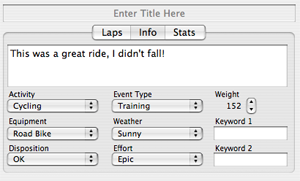

Editing Activity Info
Notes and basic information about each activity can be editied in the main browser, by using the "Info" tab in the lower right corner of the browser window. You can also give the activity a name by typing text in the box that says "Enter Title Here".

To edit activity info:
- Click on the "Info" tab.
- Enter notes for the activity as desired
- Choose the proper values for the activity from the popup menus
- Enter up to 2 keywords if you want; these can be used later to search for and sort items in the main browser
- Save the data by choosing "Save" from the File menu, or by pressing CMD-S.